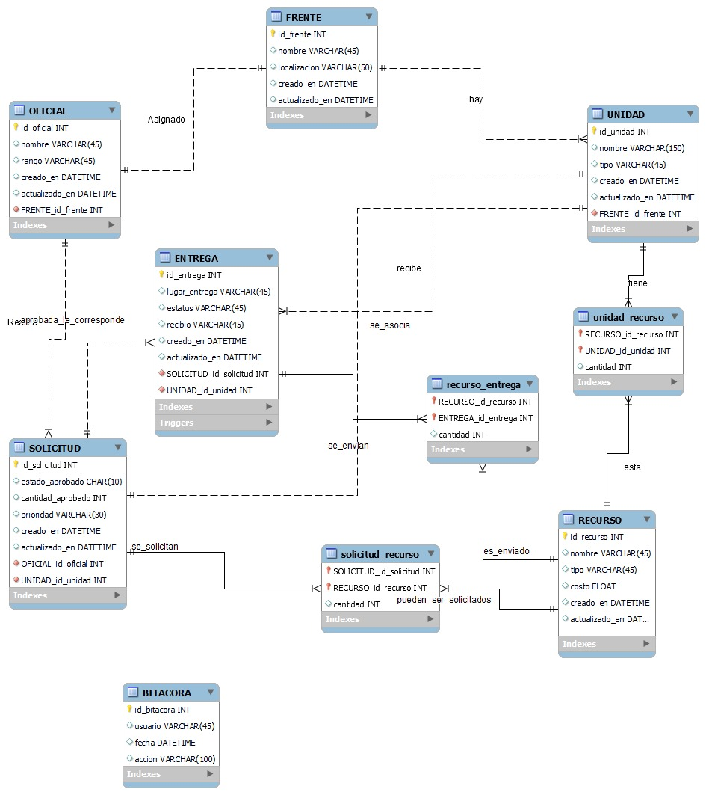

Proyecto Final.
¿En qué consiste nuestro proyecto?
Desarrollamos la siguiente base de datos para la realización de un proyecto final en la materia de Administración de Base de Datos:
De esta base de datos, formulamos un enunciado para representar el proceso que la base de datos pueda usar y pueda manejar
Enunciado:
Una unidad crea una solicitud de recursos donde especifica el recurso solicitado, la cantidad y la prioridad de uso, una vez crea la solicitud, se envía al oficial designado de esa unidad. El oficial recibe la solicitud y procede a evaluar la solicitud, en caso de no aprobar la solicitud, el oficial manda una notificacion a la unidad sobre el estado de la evaluacion, la unidad recibe la respuesta y revisa su estrategia y cambia sus planes para poder rehacer la solicitud. En caso de que el oficial haya aprobado la solicitud, esta se registra en el sistema y una vez registrada se le notifica al Administrado de alto mando, el cual valora la solicitud, revisa si existen los recursos y el personal disponible solicitado y en base a eso aprueba o no la solicitud, si no aprueba la solicitud, en el Sistema se registra que la solicitud fue rechazada, luego el sistema notifica al oficial acerca del estado de su solicitud y procede a notificar a la unidad para que estos revisen su estrategia (tal y como se habia especificado antes). Si la solicitud es aprobada por el administrador de alto mando, el Sistema registra que la solicitud fue aceptada y el Sistema notifica al oficial el estado de su solicitud, a su vez el administrado de alto mando informa al emisor de entregas, el Receptor de entregas recibe la solicitud, registra el envío de suministros y a su vez, envía los recursos solicitados, el oficial recibe los recursos y revisa si se envió lo solicitado, en caso de que si se haya enviado lo solicitado, la unidad recibe los recursos y actualizan la informacion de los recursos. En caso de que no se haya enviado lo solicitado, la unidad recibe los recursos, actualiza la información de los recursos y al mismo tiempo revisan su estrategia y cambian sus planes para poder realizar otra solicitud hasta que se envíe lo solicitado.
Y en base a este enunciado, se contruyó el diagrama BPMN para representar este proceso.
Diagrama BPMN:
Ahora creamos el diagrama de casos de uso.
Diagrama de casos de uso:

Mencionaremos los tipos de requisitos que se necesitan para llevar a cabo este proyecto de la mejor manera.
Tipos de requisitos:
Requisitos Funcionales:
1. La Unidad debe poder crear una solicitud de recursos especificando el recurso, la cantidad y la prioridad de uso.
2. La solicitud creada por la unidad debe ser enviada al Oficial designado.
3. El Oficial debe poder recibir y evaluar la solicitud.
4. En caso de rechazo, el Oficial debe poder enviar una notificación a la Unidad.
5. Si el Oficial aprueba la solicitud, esta debe ser registrada en el Sistema y notificada al Administrador de alto mando.
6. El Administrador de alto mando debe poder valorar la solicitud y revisar la disponibilidad de recursos y personal.
7. El Sistema debe poder registrar el estado de la solicitud (aceptada o rechazada) y notificar al Oficial y a la Unidad.
8. El Emisor de entregas debe poder recibir la solicitud, registrar el envío de suministros y enviar los recursos solicitados.
9. El Oficial debe poder recibir y revisar los recursos enviados.
10. La Unidad debe poder recibir los recursos y actualizar la información de los recursos.
Requisitos No Funcionales:
1. El sistema debe ser capaz de manejar múltiples solicitudes y usuarios simultáneamente.
2. El sistema debe garantizar la seguridad y privacidad de la información de las solicitudes.
3. El sistema debe proporcionar notificaciones en tiempo real sobre el estado de las solicitudes.
4. El sistema debe ser fácil de usar para todas las partes involucradas (unidad, oficial, administrador de alto mando, emisor de entregas).
5. El sistema debe ser confiable, es decir, debe funcionar correctamente y sin interrupciones.
6. El sistema debe ser capaz de manejar y registrar correctamente los recursos y las solicitudes.
Requisitos de Interfaz:
1. La interfaz debe permitir a la unidad crear y enviar solicitudes de manera eficiente.
2. La interfaz debe proporcionar al oficial y al administrador de alto mando las herramientas necesarias para evaluar las solicitudes.
3. La interfaz debe permitir al emisor de entregas registrar el envío de suministros de manera efectiva.
Requisitos de Usuario:
1. La unidad debe ser capaz de crear, enviar y revisar solicitudes.
2. El oficial debe poder recibir, evaluar y responder a las solicitudes.
3. El administrador de alto mando debe poder valorar las solicitudes y revisar la disponibilidad de recursos y personal.
4. El emisor de entregas debe poder recibir la solicitud, registrar el envío de suministros y enviar los recursos solicitados.
Requisitos de Seguridad:
1. El sistema debe garantizar la privacidad y seguridad de la información de las solicitudes.
2. El sistema debe tener medidas de seguridad para prevenir accesos no autorizados.
3. El sistema debe tener un protocolo de recuperación de datos en caso de fallos.
Requisitos de Rendimiento:
1. El sistema debe ser capaz de manejar múltiples solicitudes simultáneamente sin degradar el rendimiento.
2. El sistema debe proporcionar respuestas rápidas a las solicitudes de los usuarios.
3. El sistema debe ser capaz de escalar para manejar un aumento en la cantidad de usuarios o solicitudes.
Requisitos de Registro y Seguimiento:
1. El sistema debe registrar todas las solicitudes y las acciones realizadas en ellas.
2. El sistema debe proporcionar a los usuarios la capacidad de rastrear el estado de sus solicitudes.
3. El sistema debe mantener un historial de todas las solicitudes y las acciones realizadas en ellas.
Requisitos de Comunicación:
1. El sistema debe proporcionar notificaciones en tiempo real sobre el estado de las solicitudes.
2. El sistema debe permitir la comunicación eficiente entre todas las partes involucradas.
3. El sistema debe proporcionar a los usuarios la capacidad de enviar y recibir mensajes relacionados con las solicitudes.
Requisitos de Actualización de Información:
1. El sistema debe permitir a la unidad actualizar la información de los recursos. 2. El sistema debe reflejar en tiempo real cualquier cambio en el estado de las solicitudes o en la información de los recursos.
Requisitos de Verificación:
1. El oficial debe poder verificar si los recursos enviados coinciden con los solicitados.
2. El sistema debe proporcionar las herramientas necesarias para facilitar esta verificación.
Requisitos de Aprobación:
1. El oficial y el administrador de alto mando deben tener la capacidad de aprobar o rechazar solicitudes.
2. El sistema debe registrar y reflejar correctamente el estado de aprobación de las solicitudes.
Requisitos de Hardware y Software:
1. El sistema debe ser compatible con los dispositivos y sistemas operativos utilizados por la unidad, el oficial, el administrador de alto mando y el emisor de entregas.
Requisitos de Red:
1. El sistema debe funcionar correctamente en la red utilizada por la organización, permitiendo la comunicación eficiente entre todas las partes involucradas.
Requisitos de Datos:
1. El sistema debe permitir a la unidad, al oficial y al administrador de alto mando introducir y actualizar la información de las solicitudes y los recursos.
2. El sistema debe almacenar de forma segura toda la información relacionada con las solicitudes y los recursos.
Requisitos de Legalidad:
1. El sistema debe cumplir con todas las leyes y regulaciones aplicables, incluyendo las leyes de privacidad de datos.
Requisitos de Accesibilidad:
1. El sistema debe ser accesible para todos los usuarios, independientemente de sus habilidades físicas o técnicas.
Requisitos de Escalabilidad:
1. El sistema debe ser capaz de manejar un aumento en el número de solicitudes o usuarios sin degradar el rendimiento.
Requisitos de Mantenibilidad:
1. El sistema debe ser fácil de mantener y actualizar para los desarrolladores, permitiendo la incorporación de nuevas funcionalidades o la corrección de errores de manera eficiente.
Diagrama de secuencias: